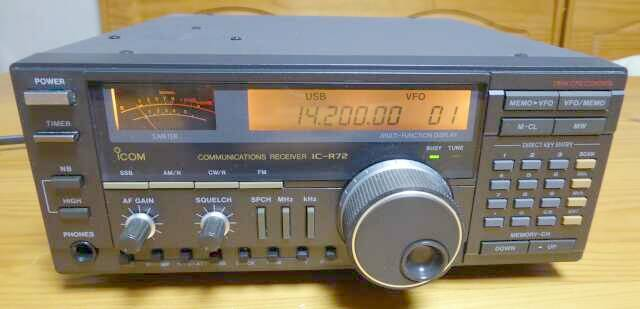
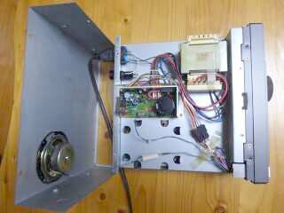
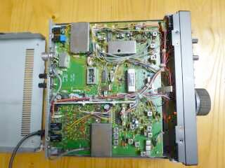
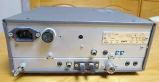
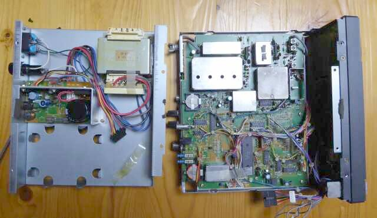

アマチュア無線向けとしては、あまり人気がなかったＬＦ～ＨＦ用受信機です
多分ですが、ＩＣ－７２１と言うトランシーバの受信部を切り出したような内容であろうと思われます
トップ・ミキサ方式を採用した、アップ・コンバージョン・ゼネラルカバレッジ受信機です
１９９０年の発売当時、最新と言われた技術が、きっちり採用してあります
従いまして、受信機とすればコンパクトで、それなりな性能を有したものと言えます
受信機としての性能が良くなくて、人気が出なかったと言うことではなかったと考えます
色々と出来ることは細かく思い通りに調整をしたいアマチュア無線家からすれば、本機のようにシンプルな操作性を追求した設計のものでは、人気には繋がらなかったと言うことでしょう
ＳＷＬやアマチュア無線ニューカマーにとってどうだったかは、この金額（￥１０８，０００）からは、ちょっと望めないユーザー対象だったのではないかと思います（むしろ、セミ業務／業務向けの予備を意識したものかも）
その昔、自宅で受信だけでもと、Ｃｕｓｈｃｒａｆｔ製のバーチカル・アンテナをベランダに設置し、使っていたものがあるのを思い出しました！
久しぶりの通電でしたが、ちゃんと動作してくれました
ただ、メインダイヤルのゴム部分（ノブの周囲を巻いているもの）の劣化が進んでいました |

幅２４４ 高さ９７（足を含めると１０７） 奥行き２２９（突起物込みで２７５） 単位はmm 約4.8Kg |
１００ＫＨｚ～３０ＭＨｚまでを連続カバーするゼネラル・カバレッジ、ＳＳＢ ＣＷ ＡＭ そしてＦＭ(オプション）に対応します
ＡＣ１００Ｖ電源を内蔵、ＤＣ１２Ｖ（１３.８Ｖ）を外部から給電することでも動作します（最大１.２Ａ）
ＦＭモードについては、トリプル･コンバージョン、他のモードはダブル・コンバージョンです
１ｓｔ-ＩＦ：７０ＭＨｚ台 ２ｎｄ-ＩＦ：９ＭＨｚ台 ３ｒｄ-ＩＦ：４５５ＫＨｚ（ＦＭのみ）
テン・キーで直接周波数を指定できること以外は、一般のトランシーバの操作性と、ほとんど同じです
混信除去機能としてＰＢＴ、ノッチフィルタが搭載されておらず、ＮＢも2段階の切替／連続可変のレベルコントロール無しと、市街地でローカル局の影響を大きく受けるようなハードな運用環境向けではないと言うことで、アマチュア無線家には人気がなかったのでしょう
私のように、イナカで運用するには、なにも問題のないシンプルで良い受信機です
高ダイナミックレンジを実現
トップ・ミキサ(プリ・アンプ、アッテネータ内蔵）、ルーフィングフィルタの採用など
基本的なところは、きちんと押さえた設計です
高Ｃ／ＮのＤＤＳタイプ・オシレータの採用
このクラスとしては最高レベルの近接信号の影響を抑える能力を有しています
高速１０Ｈｚステップにも対応
|
|
 |
上カバーを開けたところ
電源関係しか見えません！ あれ～っ
|
|
 |
こちらは、下カバーを開けたところです
フィルタ・オプションは、ＣＷナローのみオプションで搭載可能(見えているのはSSB用クリスタルフィルタ）
その他オプションとしては、
１．プロテクタユニット(過大アンテナ入力から保護）
２．音声合成ユニット
３．高安定基準水晶発振ユニット
４．キャリング･ハンドル
ＣＷフィルタは、５００Ｈｚ／２５０Ｈｚいずれか選択の一つのみ内蔵可能です
本機には、オプションは何も組まれていません |
|
 |
リアパネル
ご覧のように、非常にシンプルです
ＡＣコンセントやヒューズホルダが大きく見えます
ほぼ中央に黒く見える「ジャック」が、ＤＣ電源接続端子です
アンテナ接続端子は、５０Ω系と５００Ω系の両方が用意されています(排他利用） |
|
 |
上から見えていた電源が乗っているシャーシを外したその下に、ＰＬＬユニットがあります
言わば心臓部が、上下のシャーシに挟まれた形で組まれていると言うことになります
（正確には、下シャーシの上下に組まれていて、その上に電源シャーシが乗っかっている、です） |
|
|
デジタル処理が本格的に普及しだした９０年代初期の製品です
コンパクトに仕上げることについては、お得意のアイコムですね
何とか、メインダイヤルゴム（ツマミカバー）を入手することが出来、雰囲気が良くなりました(2017.04) |